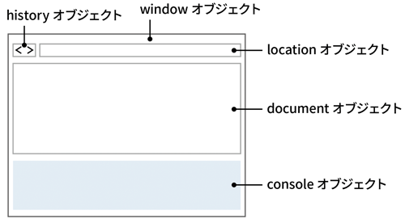

DOM（Document Object Model）
- JavaScriptでWebページを扱う仕組み
- WebブラウザがHTMLを読み込むと、レンダリングエンジンという機能が解釈してWebページを表示します
- Webページの中の各部品を「要素（element）」といい、この要素をJavaScriptで操作します
オブジェクトを利用してHTMLを操作する
- ツリー構造とも呼ばれる階層構造を取る
- それぞれ「ノード」という言葉で説明される
- Webページの各要素を表すElementオブジェクトにアクセスできます

- Elementオブジェクトを追加・削除したり、Elementオブジェクトがもつ情報を変更したりすることで、JavaScriptでWebページを操作できます
- このようにオブジェクトを使ってHTMLを操作する仕組みを「DOM（Document Object Model）」と呼びます

Locationオブジェクト
- 現在表示されているページのロケーションに関する情報を提供する
- 現在の表示URLアドレスに関する情報を取得できる
Historyオブジェクト
- ブラウザの履歴の操作
- 画面上に表示しているページの移動などの操作
Navigatorオブジェクト
- ブラウザー名やバージョンなど、ブラウザ固有の情報を提供する
Screenオブジェクト
- ディスプレイに関する情報を提供する
Formオブジェクト
- Formに関する情報を提供する
- Formの操作
Anchorオブジェクト
- ページ上のアンカーに関する情報を扱う
Imagesオブジェクト
- 画像に関する情報を提供する
- 画像を操作する機能を提供する
Elementオブジェクト
- ページ上のアンカーに関する情報を扱う
Webページの文字を変更する
- HTMLドキュメントやXMLドキュメントにおける、要素（タグ）のこと
querySelectorメソッド
window.document.querySelector
セレクターとは
- 要素を選び出すときの「指示」になる文字列のこと
const element = document.querySelector( '文字列' );
- 「window」は、省略します
textContentで要素の中のテキストにアクセスする
- テキストにHTMLを含まないのであれば、textContentプロパティのほうが innerHTMLプロパティより高速で、セキュリティ面でも安全
<body> <h1>ここに表示</h1> <script> const str = 'JavaScriptで表示'; const element = document.querySelector( 'h1' ); element.textContent = str; </script> </body>
getElementByIdメソッド（id名をキーに要素を取得）
- 指定した id名を持つ要素を１つ取得するメソッド
- 指定した id名を持つ要素がなければ、nullを返す
ES6の場合
<body> <h1 id="result">JavaScriptで表示</h1> <button id="showButton">取得した値を表示</button> <script> const show = () => { const element = document.querySelector('#result'); console.log(element); // 'result' 要素を表示 console.log(element.textContent); // 要素のテキスト内容を表示 }; document.querySelector('#showButton').addEventListener('click', show); </script> </body>
ES5の場合
<body> <h1 id="result">JavaScriptで表示</h1> <button onclick="show()">取得した値を表示</button> <script> function show() { const element = document.querySelector( '#result' ); console.log( result ); console.log( element.textContent ); } </script> </body>